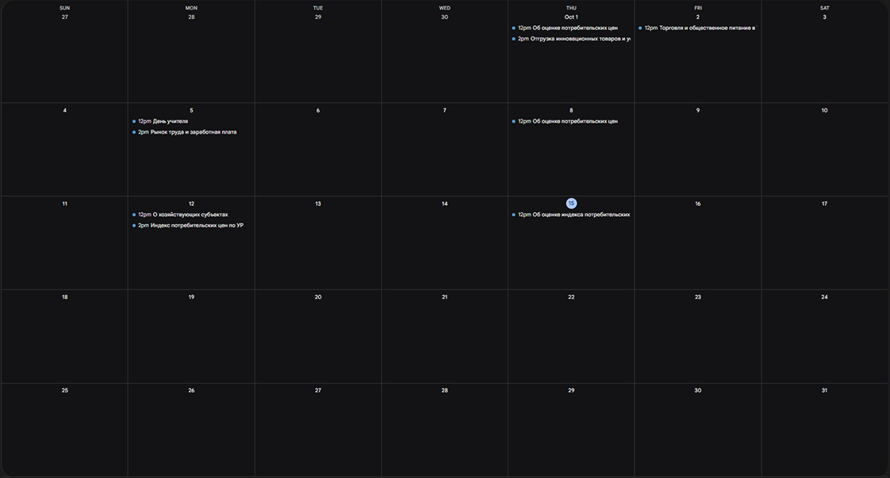
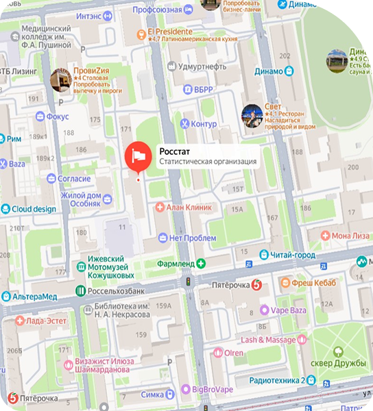

Об Удмуртстате
Что это?
Территориальный орган Росстата по Удмуртской Республике. Собирает и обрабатывает официальную статистику о населении, экономике, ценах, уровне жизни региона.
История
Ведёт отсчёт с 28 января 1835 года (Вятский губернский статкомитет). В советское время преобразован в Управление народнохозяйственного учёта Удмуртской АССР, затем — в современный Удмуртстат.
Масштаб
В 2025 году — 1252 статистические работы, полнота отчётности 95,9%, выпущено 1092 издания. За нарушения отчётной дисциплины возбуждено 340 дел, штрафов на 1170 тыс. руб.
Подборки
Всё о переписи
Итоги и методология главного статистического события десятилетия. Численность и состав населения, домохозяйства, жилищные условия. Основа для государственного планирования и социальных программ.
Цена и тарифы
Мониторинг стоимости жизни. Динамика потребительских цен, индексы инфляции, средние цены по регионам. Тарифы на ЖКХ, транспорт и связь. Данные для оценки покупательной способности населения.
Рынок труда
Занятость, безработица и заработная плата. Структура занятости по отраслям и профессиям, спрос и предложение рабочей силы. Материалы для оценки кадрового потенциала и программ занятости.
Демография
Портрет страны и регионов в цифрах. Рождаемость, смертность, продолжительность жизни, миграция. Возрастно-половая структура и демографическая нагрузка. База для социального прогнозирования.
Бизнес-статистика
Пульс предпринимательской активности. Показатели деятельности организаций: выручка, прибыль, инвестиции. Отдельные срезы по малому и среднему бизнесу, его вкладу в экономику и занятость.
Календарь публикаций

Где мы находимся?
Адрес: 426011, г. Ижевск, ул. Красноармейская, 169
Время работы:
Пн - Чт: 08:00 - 17:00 Пт: 08:00 - 16:00 Сб - Вс: выходной
Наши контакты:
(3412) 695-000

Есть вопросы по статистике или сдаче форм?